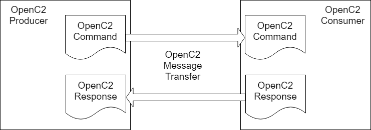
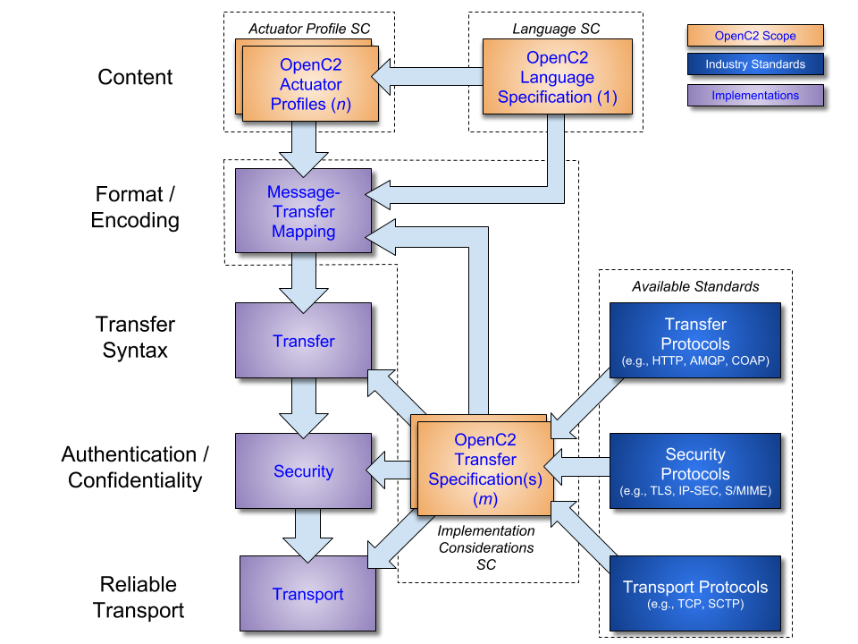

Specification URIs
This version:
Previous Version:
Latest Version:
Technical Committee:
Chairs
Editors
Open Command and Control (OpenC2) is a concise and extensible language to enable the command and control of cyber defense components, subsystems and/or systems in a manner that is agnostic of the underlying products, technologies, transport mechanisms or other aspects of the implementation. Stateless packet filtering is a cyber defense mechanism that denies or allows traffic based on static properties of the traffic (such as address, port, protocol, etc.). This profile defines the actions, targets, specifiers, and options that are consistent with version 1.0 of the OpenC2 Language Specification in the context of stateless packet filtering.
This document was last revised or approved by the OASIS Open Command and Control (OpenC2) TC on the above date. The level of approval is also listed above. Check the "Latest version" location noted above for possible later revisions of this document. Any other numbered Versions and other technical work produced by the Technical Committee (TC) are listed at https://www.oasis-open.org/committees/tc_home.php?wg_abbrev=openc2#technical.
TC members should send comments on this specification to the TC's email list. Others should send comments to the TC's public comment list, after subscribing to it by following the instructions at the "Send A Comment" button on the TC's web page at https://www.oasis-open.org/committees/openc2/.
This Draft is provided under the Non-Assertion Mode of the OASIS IPR Policy, the mode chosen when the Technical Committee was established. For information on whether any patents have been disclosed that may be essential to implementing this specification, and any offers of patent licensing terms, please refer to the Intellectual Property Rights section of the TC's web page (https://www.oasis-open.org/committees/openc2/ipr.php).
Note that any machine-readable content (Computer Language Definitions) declared Normative for this Work Product is provided in separate plain text files. In the event of a discrepancy between any such plain text file and display content in the Work Product's prose narrative document(s), the content in the separate plain text file prevails.
When referencing this specification the following citation format should be used:
[OpenC2-SLPF-v1.0]
Open Command and Control (OpenC2) Profile for Stateless Packet Filtering Version 1.0. Edited by Joe Brule, Duncan Sparrell and Alex Everett. 16 October 2018. OASIS Working Draft 04. oasis-to-fill-in-link.html.
Latest version: N/A.
Copyright © OASIS Open 2018. All Rights Reserved.
All capitalized terms in the following text have the meanings assigned to them in the OASIS Intellectual Property Rights Policy (the "OASIS IPR Policy"). The full Policy may be found at the OASIS website.
This document and translations of it may be copied and furnished to others, and derivative works that comment on or otherwise explain it or assist in its implementation may be prepared, copied, published, and distributed, in whole or in part, without restriction of any kind, provided that the above copyright notice and this section are included on all such copies and derivative works. However, this document itself may not be modified in any way, including by removing the copyright notice or references to OASIS, except as needed for the purpose of developing any document or deliverable produced by an OASIS Technical Committee (in which case the rules applicable to copyrights, as set forth in the OASIS IPR Policy, must be followed) or as required to translate it into languages other than English.
The limited permissions granted above are perpetual and will not be revoked by OASIS or its successors or assigns.
This document and the information contained herein is provided on an "AS IS" basis and OASIS DISCLAIMS ALL WARRANTIES, EXPRESS OR IMPLIED, INCLUDING BUT NOT LIMITED TO ANY WARRANTY THAT THE USE OF THE INFORMATION HEREIN WILL NOT INFRINGE ANY OWNERSHIP RIGHTS OR ANY IMPLIED WARRANTIES OF MERCHANTABILITY OR FITNESS FOR A PARTICULAR PURPOSE.
OASIS requests that any OASIS Party or any other party that believes it has patent claims that would necessarily be infringed by implementations of this OASIS Committee Specification or OASIS Standard, to notify OASIS TC Administrator and provide an indication of its willingness to grant patent licenses to such patent claims in a manner consistent with the IPR Mode of the OASIS Technical Committee that produced this specification.
OASIS invites any party to contact the OASIS TC Administrator if it is aware of a claim of ownership of any patent claims that would necessarily be infringed by implementations of this specification by a patent holder that is not willing to provide a license to such patent claims in a manner consistent with the IPR Mode of the OASIS Technical Committee that produced this specification. OASIS may include such claims on its website, but disclaims any obligation to do so.
OASIS takes no position regarding the validity or scope of any intellectual property or other rights that might be claimed to pertain to the implementation or use of the technology described in this document or the extent to which any license under such rights might or might not be available; neither does it represent that it has made any effort to identify any such rights. Information on OASIS' procedures with respect to rights in any document or deliverable produced by an OASIS Technical Committee can be found on the OASIS website. Copies of claims of rights made available for publication and any assurances of licenses to be made available, or the result of an attempt made to obtain a general license or permission for the use of such proprietary rights by implementers or users of this OASIS Committee Specification or OASIS Standard, can be obtained from the OASIS TC Administrator. OASIS makes no representation that any information or list of intellectual property rights will at any time be complete, or that any claims in such list are, in fact, Essential Claims.
The name "OASIS" is a trademark of OASIS, the owner and developer of this specification, and should be used only to refer to the organization and its official outputs. OASIS welcomes reference to, and implementation and use of, specifications, while reserving the right to enforce its marks against misleading uses. Please see https://www.oasis-open.org/policies-guidelines/trademark for above guidance.
[[TOC]]
OpenC2 is a suite of specifications that enables command and control of cyber defense systems and components. OpenC2 typically uses a request-response paradigm where a command is encoded by an OpenC2 producer (managing application) and transferred to an OpenC2 consumer (managed device or virtualized function) using a secure transport protocol, and the consumer can respond with status and any requested information. The contents of both the command and the response are fully described in schemas, allowing both parties to recognize the syntax constraints imposed on the exchange.OpenC2 allows the application producing the commands to discover the set of capabilities supported by the managed devices. These capabilities permit the managing application to adjust its behavior to take advantage of the features exposed by the managed device. The capability definitions can be easily extended in a noncentralized manner, allowing standard and non-standard capabilities to be defined with semantic and syntactic rigor.
This Working Draft is being developed under the Non-Assertion Mode of the OASIS IPR Policy, the mode chosen when the Technical Committee was established. For information on whether any patents have been disclosed that may be essential to implementing this specification, and any offers of patent licensing terms, please refer to the Intellectual Property Rights section of the TC's web page (https://www.oasis-open.org/committees/openc2/ipr.php).
The key words "MUST", "MUST NOT", "REQUIRED", "SHALL", "SHALL NOT", "SHOULD", "SHOULD NOT", "RECOMMENDED", "MAY", and "OPTIONAL" in this document are to be interpreted as described in [RFC2119] and [RFC8174].
The key words "MUST", "MUST NOT", "REQUIRED", "SHALL", "SHALL NOT", "SHOULD", "SHOULD NOT", "RECOMMENDED", "NOT RECOMMENDED", "MAY", and "OPTIONAL" in this document are to be interpreted as described in BCP 14 [RFC2119] [RFC8174] when, and only when, they appear in all capitals, as shown here.
| [RFC2119] | Bradner, S., "Key words for use in RFCs to Indicate Requirement Levels", BCP 14, RFC 2119, DOI 10.17487/RFC2119, March 1997, http://www.rfc-editor.org/info/rfc2119. |
| [RFC8174] | Leiba, B., "Ambiguity of Uppercase vs Lowercase in RFC 2119 Key Words", BCP 14, RFC 8174, DOI 10.17487/RFC8174, May 2017, http://www.rfc-editor.org/info/rfc8174. |
| [RFC8259] | Bray, T., "The JavaScript Object Notation (JSON) Data Interchange Format", December 2017, https://tools.ietf.org/html/rfc8259. |
| [RFC1123] | Author, T., "Requirements for Internet Hosts", October 1989. https://tools.ietf.org/html/rfc1123. |
| [RFC4291] | Hinden, R., Deering S. , T., "IP Version 6 Addressing Architecture ", February 2006, https://tools.ietf.org/html/rfc4291. |
| [RFC2673] | Crawford, M., "Binary Labels in Domain Name System", August 1999, https://tools.ietf.org/html/rfc2673. |
| [RFC3339] | Kline, G., "Date and Time on the Internet: Timestamps", July 2002, https://tools.ietf.org/html/rfc3339. |
| [RFC5237] | Arkko, J., Erricsson, S. , "IANA Allocation Guidelines for the Protocol Field", February 2008, https://tools.ietf.org/html/rfc5237. |
| [OpenC2-Lang-v1.0] | Open Command and Control (OpenC2) Language Specification Version 1.0. Edited by Jason Romano and Duncan Sparrell. xx August 2018. OASIS Working Draft 08. oasis-to-fill-in-link.html. Latest version: http://docs.oasis-open.org/openc2/oc2ls/v1.0/oc2ls-v1.0.html. |
| [OpenC2-HTTPS-v1.0] | Specification for Transfer of OpenC2 Messages via HTTPS Version 1.0. Edited by David Lemire. 16 October 2018. OASIS Committee Specification Draft 03. http://docs.oasis-open.org/openc2/open-impl-https/v1.0/csd03/open-impl-https-v1.0-csd03.html. Latest version: http://docs.oasis-open.org/openc2/open-impl-https/v1.0/open-impl-https-v1.0.html. |
The following color, font and font style conventions are used in this document:
created_a**tExample:
{
"action": "contain",
"target": {
"user_account": {
"user_id": "fjbloggs",
"account_type": "windows-local"
}
}
}OpenC2 is a suite of specifications to command actuators that execute cyber defense functions. These specifications include the OpenC2 Language Specification, Actuator Profiles, and Transfer Specifications. The OpenC2 Language Specification and Actuator Profile(s) specifications focus on the standard at the producer and consumer of the command and response while the transfer specifications focus on the protocols for their exchange.
The OpenC2 Language Specification defines a language used to compose messages for command and control of cyber defense systems and components. A message consists of a header and a payload (defined as a message body in the OpenC2 Language Specification Version 1.0 and specified in one or more actuator profiles).
In general, there are two types of participants involved in the exchange of OpenC2 messages, as depicted in Figure 1-1:
The language defines two payload structures:

Figure 1-1. OpenC2 Message Exchange
OpenC2 implementations integrate the related OpenC2 specifications described above with related industry specifications, protocols, and standards. Figure 1 depicts the relationships among OpenC2 specifications, and their relationships to other industry standards and environment-specific implementations of OpenC2. Note that the layering of implementation aspects in the diagram is notional, and not intended to preclude, e.g., the use of an application-layer message signature function to provide message source authentication and integrity.

Figure 1-2. OpenC2 Documentation and Layering Model
OpenC2 is conceptually partitioned into four layers as shown in Table 1-1.
Table 1-1. OpenC2 Protocol Layers
| Layer | Examples |
|---|---|
| Function-Specific Content | Actuator Profiles(standard and extensions) |
| Common Content | Language Specification(this document) |
| Message | Transfer Specifications (OpenC2-over-HTTPS, OpenC2-over-CoAP, …) |
| Secure Transport | HTTPS, CoAP, MQTT, OpenDXL, ... |
The components of an OpenC2 Command are an action (what is to be done), a target (what is being acted upon), an optional actuator (what is performing the command), and command arguments, which influence how the command is to be performed. An action coupled with a target is sufficient to describe a complete OpenC2 Command. Though optional, the inclusion of an actuator and/or command arguments provides additional precision to a command, when needed.
The components of an OpenC2 Response are a numerical status code, an optional status text string, and optional results. The format of the results, if included, depend on the type or response being transferred.
The goal of the OpenC2 Language Specification is to provide a language for interoperating between functional elements of cyber defense systems. This language used in conjunction with OpenC2 Actuator Profiles and OpenC2 Transfer Specifications allows for vendor-agnostic cybertime response to attacks.
The Integrated Adaptive Cyber Defense (IACD) framework defines a collection of activities, based on the traditional OODA (Observe–Orient–Decide–Act) Loop [IACD]:
The goal of OpenC2 is to enable coordinated defense in cyber-relevant time between decoupled blocks that perform cyber defense functions. OpenC2 focuses on the Acting portion of the IACD framework; the assumption that underlies the design of OpenC2 is that the sensing/ analytics have been provisioned and the decision to act has been made. This goal and these assumptions guides the design of OpenC2:
A ‘Stateless Packet Filter’ (SLPF) is a policy enforcement mechanism that restricts or permits traffic based on static values such as source address, destination address, and/or port numbers. A Stateless-Packet-Filter does not consider traffic patterns, connection state, data flows, applications, or payload information. The scope of this profile is limited to Stateless-Packet-Filtering herein referred to as SLPF.
This actuator profile specifies the set of actions, targets, specifiers, and command arguments that integrates SLPF functionality with the Open Command and Control (OpenC2) command set. Through this command set, cyber security orchestrators may gain visibility into and provide control over the SLPF functionality in a manner that is independent of the instance of the SLPF function.
All components, devices and systems that provide SLPF functionality will implement the OpenC2 ACTIONS, TARGETS, SPECIFIERS and ARGS identified as required in this document. Actions that are applicable, but not necessarily required, for SLPF will be identified as optional.
The purpose of this document is to:
This SLPF profile:
Cyber defense systems that are utilizing OpenC2 may require the following components to implement the SLPF profile:
Though cyber defense components, devices, systems and/or instances may may implement multiple actuator profiles, a particular OpenC2 message may reference at most a single actuator profile. The scope of this document is limited to SLPF.
This specification is organized into three major sections.
Section One (this section) provides a nonnormative overview of the suite of specifications that realize OpenC2. This section provides references as well as defines the scope and purpose of this specification.
Section Two (normative) binds this particular profile to the OpenC2 Language Specification. Section Two enumerates the components of the language specification that are meaningful in the context of SLPF and defines components that are applicable to this distinct profile. Section Two also defines the commands (i.e., the action target pairs) that are permitted in the context of SLPF.
Section Three (normative) presents definitive criteria for conformance so that cyber security stakeholders can be assured that their products, instances and/or integrations are compatible with OpenC2.
This specification provides three non-normative Annexes. OpenC2 is intended for machine to machine interactions, therefore a schema for SLPF and the applicable portions of the OpenC2 Language schema are provided to facilitate development. There is also an Annex that provides multiple examples of SLPF commands (JSON serialization).
This section defines the set of ACTIONS, TARGETS, SPECIFIERS, and ARGS that are meaningful in the context of an SLPF. This section also describes the format of the response frame's status and results field. This section organized into three major subsections; Command Components, Response Components and Commands.
The components of an OpenC2 command include ACTIONS, TARGETS, ACTUATORS and associated ARGS and SPECIFIERS. Appropriate aggregation of the components will define a command-body that is meaningful in the context of an SLPF.
This specification identifies the applicable components of an OpenC2 command. The components of an OpenC2 command include:
Table 2.1.1-1 presents the OpenC2 actions defined in version 1.0 of the Language Specification which are meaningful in the context of an SLPF. The particular action/target pairs that are required or optional are presented in section 2.3.
Table 2.1.1-1. Actions Applicable to SLPF
Type: Action (Enumerated)
| ID | Name | Description |
|---|---|---|
| 3 | query | Initiate a request for information. Used to communicate the supported options and determine the state or settings. |
| 6 | deny | Prevent traffic or access. |
| 8 | allow | Permit traffic or access. |
| 16 | update | Instructs the actuator to update its configuration by retrieving and processing a configuration file and update. |
| 20 | delete | Remove an access rule. |
Table 2.1.2-1 lists the TARGETs defined in the OpenC2 Language specification that are applicable to SLPF. The particular action/target pairs that are required or optional are presented in section 2.3.
Table 2.1.2-1. Targets Applicable to SLPF
Type: Target (Choice)
| ID | Name | Type | Description |
|---|---|---|---|
| 10 | file | File | Properties of a file. |
| 11 | ip_addr | IP-Addr | The representation of one or more IP addresses (either version 4 or version 6) expressed using CIDR notation. |
| 15 | ip_connection | IP-Connection | A network connection that originates from a source and is addressed to a destination. Source and destination addresses may be either IPv4 or IPv6; both should be the same version |
| 16 | features | Features | A set of items such as action target pairs, profiles versions, options that are supported by the actuator. The target is used with the query action to determine an actuator's capabilities. |
| 1024 | slpf | slpf:Target | Targets defined in the Stateless Packet Filter profile. |
The slpf:Target type is defined in this specification and is referenced under the slpf namespace. Implementations that choose to include this type MUST import it in accordance with the procedures defined in section 2.2.6 of Version 1.0 of the OpenC2 Language Specification:
oasis-open.org/openc2/v1.0/ap-slpfslpfTarget, Actuator, Args, and Results.Type: Target (Choice)
| ID | Name | Type | Description |
|---|---|---|---|
| 1 | rule_number | Rule-ID | Immutable identifier assigned when a rule is created, Identifies a rule to be deleted. |
Implementations that choose to support slpf:Target MUST support the rule_number target.
Arguments provide additional precision to a command by including information such as how, when, or where a command is to be executed. Table 2.1.3-1 summarizes the command arguments defined in Version 1.0 of the OpenC2 Language Specification as they relate to SLPF functionality. Table 2.1.3-2 summarizes the command arguments that are defined in this specification.
Table 2.1.3.1-1 lists the command arguments defined in the OpenC2 Language specification that are applicable to SLPF.
Table 2.1.3-1. Command Arguments applicable to SLPF
Type: Args (Map)
| ID | Name | Type | # | Description |
|---|---|---|---|---|
| 1 | start_time | Date-Time | 0..1 | The specific date/time to initiate the action |
| 2 | stop_time | Date-Time | 0..1 | The specific date/time to terminate the action |
| 3 | duration | Duration | 0..1 | The length of time for an action to be in effect |
| 4 | response_requested | Response-Type | 0..1 | The type of response required for the action: none, ack, status, complete. |
| 1024 | slpf | slpf:Args | 0..1 | Command arguments defined in the Stateless Packet Filter profile |
The semantics/requirements as they relate to common arguments:
complete.The command arguments defined in this document are referenced under the slpf namespace.
Table 2.1.3-2. Command Arguments Unique to SLPF
Type: Args (Map)
| ID | Name | Type | # | Description |
|---|---|---|---|---|
| 1 | drop_process | Drop-Process | 0..1 | Specifies how to handle denied packets |
| 2 | running | Boolean | 0..1 | Normal operations assumes any change to a device are to be implemented as persistent changes. Setting the running modifier to TRUE results in a change that is not persistent in the event of a reboot or restart. |
| 3 | direction | Direction | 0..1 | Specifies whether to apply rules to incoming or outgoing traffic. If omitted, rules are applied to both. |
| 4 | insert_rule | Rule-ID | 0..1 | Specifies the identifier of the rule within a list, typically used in a top-down rule list. |
Type: Drop-Process (Enumerated)
| ID | Name | Description |
|---|---|---|
| 1 | none | Drop the packet and do not send a notification to the source of the packet. |
| 2 | reject | Drop the packet and send an ICMP host unreachable (or equivalent) to the source of the packet. |
| 3 | false_ack | Drop the traffic and send a false acknowledgement. |
Type: Direction (Enumerated)
| ID | Name | Description |
|---|---|---|
| 1 | ingress | Apply rules to incoming traffic only |
| 2 | egress | Apply rules to outgoing traffic only |
Type: Rule-ID
| Type Name | Type | Description |
|---|---|---|
| Rule-ID | Integer | Access rule identifier |
The semantics/ requirements as they relate to SLPF arguments:
An ACTUATOR is the entity that provides the functionality and performs the action. The ACTUATOR executes the ACTION on the TARGET. In the context of this profile, the actuator is the SLPF and the presence of one or more specifiers further refine which actuator(s) shall execute the action.
Table 2.1.4-1 lists the specifiers that are applicable to the SPLF actuator. Annex C provides sample commands with the use of specifiers.
The actuator specifiers defined in this document are referenced under the slpf namespace.
Table 2.1.4-1. SLPF Specifiers
Type: Specifiers (Map)
| ID | Name | Type | # | Description |
|---|---|---|---|---|
| 1 | hostname | String | 0..1 | RFC 1123 hostname (can be a domain name or IP address) for a particular device with SLPF functionality |
| 2 | named_group | String | 0..1 | User defined collection of devices with SLPF functionality |
| 3 | asset_id | String | 0..1 | Unique identifier for a particular SLPF |
| 4 | asset_tuple | String | 0..10 | Unique tuple identifier for a particular SLPF consisting of a list of up to 10 strings |
Response messages originate from the ACTUATOR as a result of a command.
Responses associated with required actions MUST be implemented. Implementations that include optional ACTIONS MUST implement the RESPONSE associated with the implemented ACTION. Additional details regarding the command and associated response are captured in section 2.3. Examples will be provided in Annex C.
Table 2.2.1-1 lists the results defined in the OpenC2 Language specification that are applicable to SLPF.
Table 2.2.1-1. Results Applicable to SLPF
Type: OpenC2-Response (Map)
| ID | Name | Type | # | Description |
|---|---|---|---|---|
| 1 | status | Status-Code | 0..1 | An integer status code |
| 2 | status_text | String | 0..1 | A free-form human-readable description of the response status |
| 6 | versions | Version | 0..n | List of OpenC2 language versions supported by this actuator |
| 7 | profiles | jadn:Uname | 0..n | List of profiles supported by this actuator |
| 8 | schema | jadn:Schema | 0..1 | Syntax of the OpenC2 language elements supported by this actuator |
| 9 | pairs | Action-Targets | 0..n | List of targets applicable to each supported action |
| 10 | rate_limit | Number | 0..1 | Maximum number of requests per minute supported by design or policy |
| 1024 | slpf | slpf:Results | 0..1 | Response data defined in the Stateless Packet Filtering profile |
Table 2.2.1-2 lists the Status Codes defined in the OpenC2 Language specification that are applicable to SLPF.
Table 2.2.1-2. Status Codes
Type: Status-Code (Enumerated.ID)
| Value | Description |
|---|---|
| 102 | Processing. Command received but action not necessarily complete |
| 200 | OK. |
| 400 | Bad Request. Unable to process command, parsing error |
| 500 | Internal Error. For response type complete, one of the following MAY apply: <NOT_PARA> <NOT_PARA> <NOT_PARA> |
| 501 | Not implemented. For response type complete, one of the following MAY apply: <NOT_PARA> <NOT_PARA> <NOT_PARA> |
The results defined in this document are presented in Table 2.2-2. The results are referenced under the slpf namespace within the OpenC2-Response type defined in the OpenC2 language specification.
Table 2.2-2. SLPF Results
Type: Results (Map)
| Type Name | Type | Description |
|---|---|---|
| rule_number | Rule-ID | Rule identifier returned from allow or deny command. |
An OpenC2 command consists of an ACTION/TARGET pair and associated SPECIFIERS and ARGUMENTs. This section enumerates the allowed commands, identify which are required or optional to implement, and present the associated responses.
Table 2.3-1 defines the commands allowed by the SLPF profile and indicates if implementation of the command is required or optional for Openc2 Producers and/or Openc2 Consumers. An ACTION (the top row in Table 2.3-1) paired with a TARGET (the first column in Table 2.3-1) defines an allowable command. The subsequent subsections provide the property tables applicable to each OpenC2 command.
Table 2.3-1. Command Matrix
| Allow | Deny | Query | Delete | Update | |
|---|---|---|---|---|---|
| ip_connection | required | required | |||
| ip_addr | required | required | |||
| features | required | ||||
| slpf:rule_number | optional | ||||
| file | optional |
Table 2.3-2 defines the command arguments that are allowed for a particular command by the SLPF profile. A command (the top row in Table 2.3-2) paired with an argument (the first column in Table 2.3-2) defines an allowable combination. The subsection identified at the intersection of the command/ argument provides details applicable to each command as influenced by the argument.
Table 2.3-2. Command Arguments Matrix
| Allow |
Deny |
Query features | Delete slpf:rule_number | Update file | |
|---|---|---|---|---|---|
| response | 2.3.1 | 2.3.2 | 2.3.3.1 | 2.3.4.1 | 2.3.5.1 |
| start-time | 2.3.1 | 2.3.2 | 2.3.4.1 | 2.3.5.1 | |
| end-time | 2.3.1 | 2.3.2 | |||
| duration | 2.3.1 | 2.3.2 | |||
| running | 2.3.1 | 2.3.2 | |||
| direction | 2.3.1 | 2.3.2 | |||
| insert_rule | 2.3.1 | 2.3.2 | |||
| drop_process | 2.3.2 |
Table 2.3.1-1 summarizes the command options that apply to all of the commands consisting of the ‘allow’ action and a valid target type.
Upon receipt of an unsupported command argument, SLPF consumers
Products that send ‘allow target’ commands and support the ‘delete slpf:rule_number’ command:
Products that receive and successfully parse ‘allow
Products that receive ‘allow
Products that receive ‘allow target’ commands and support the ‘insert_rule’ command argument:
The valid target types, associated specifiers, and options are summarized in sections 2.3.1.1 and 2.3.1.2. Sample commands are presented in Annex C.
The ‘allow ip_connection’ command is required for openc2 producers implementing the SLPF.
If the ‘allow ip_addr’ target is not implemented, then SLPF consumers MUST implement the ‘allow ip-connection’ command. Otherwise it is OPTIONAL.
The command permits traffic that is consistent with the specified ip_connection. A valid ‘allow ip_connection’ command has at least one property of the ip_connection populated and may have any combination of the five properties populated. An unpopulated property within the the ip_connection target MUST be treated as an ‘any’.
Products that receive but do not implement the ‘allow ip_connection’ command:
The ‘allow ip_addr’ command is required for openc2 producers implementing the SLPF.
If the ‘allow ip_connection’ target is not implemented, then SLPF consumers MUST implement the ‘allow ip_addr’ command. Otherwise the ‘allow ip-addr’ command is OPTIONAL.
The command permits traffic as specified by the ip_addr property and may be an IPV4 or IPV6 address. The ip-addr supports CIDR notation. The address specified in the ip_addr MUST be treated as a source OR destination address.
Products that receive but do not implement the ‘allow ip_addr’ command:
‘Deny’ can be treated as mathematical complement to ‘allow’. With the exception of the additional ‘drop_process’ actuator-argument, the targets, specifiers, options and corresponding responses are identical to the two ‘allow’ commands. Table 2.3-2 summarizes the command arguments that apply to all of the commands consisting of the ‘deny’ action and valid target type.
Upon receipt of a command with an ARGUMENT that is not supported by the actuator, actuators:
Products that send ‘deny target’ commands and support the ‘delete slpf:rule_number’ command:
if the insert_rule argument is populated.
Products that receive ‘deny
Products that receive ‘deny target’ commands and support the ‘insert_rule’ command argument:
The valid target type, associated specifiers, and options are summarized in section 2.3.3.1. Sample commands are presented in Annex C.
The ‘query openc2’ command MUST be implemented in accordance with Version 1.0 of the OpenC2 language specification.
The slpf:rule_number is the only valid target type for the delete action. The associated specifiers, and options are summarized in section 2.3.4.1. Sample commands are presented in Annex C.
The ‘delete slpf:rule_number’ command is used to remove a firewall rule rather than issue an allow or deny to counteract the effect of an existing rule. Implementation of the ‘delete slpf:rule_number’ command is OPTIONAL. Products that choose to implement the ‘delete slpf:rule_number’ command MUST implement the slpf:rule_number target type described in section 2.1.2.1.
Products that send the ‘delete slpf:rule_number’ command:
Products that receive the ‘delete slpf:rule_number’ command:
Refer to Annex C for sample commands.
The ‘file’ target as defined in Version 1.0 of the Language Specification is the only valid target type for the update action. The associated specifiers, and options are summarized in section 2.3.5.1. Sample commands are presented in Annex C.
The ‘update file’ command is used to replace or update files such as configuration files, rule sets, etc. Implementation of the update file command is OPTIONAL. OpenC2 consumers that choose to implement the ‘update file’ command MUST must include all steps that are required for the update file procedure such as retrieving the file(s), install the file(s), restart/ reboot the device etc. The end state shall be that the firewall operates with the new file at the conclusion of the ‘update file’ command. The atomic steps that take place are implementation specific.
Table 2.3-2 presents the valid options for the ‘update file’ command. Products that choose to implement the ‘update file’ command MUST NOT include options other than the options identified in table 2.3-2
Products that send the ‘update file’ command:
Products that receive the ‘update file’ command:
Refer to Annex C for sample commands.
Definitions: The following terms apply to this section:
A conformant OpenC2 implementation SHALL meet all the normative requirements specified in the SLPF Profile as well as applicable normative requirements specified in the Language Specification. Table 3-1 provides a overview of the applicable normative requirements. The traceability for conformance criteria involving commands (action target pairs) are ‘derived’, where derived is defined as a combination of more than a single normative statements from the language specification into a single criteria within the SLPF specification. Sections 3.1 through 3.X provide a concise summary of the corresponding conformance criteria.
Table 3-1: SLPF Traceability Matrix
| Conformance Criteria | SLPF Section Reference | Language Specification (V 1.0) Reference | Conformance Criteria Reference |
|---|---|---|---|
| JSON Serialization | 2.2 | 3.1-1.1 and 3.2-1.1 | |
| OpenC2 Transfer Specification | 1.1 | 5 | 3.1-1.3, 3.2-1.3, 3.3-1.2 and 3.4-1.2 |
| Actions | 2.1.1 | 3.3.1.2 | |
| Targets | 2.1.1.2 | 3.4.1.3, 3.4.1.8, 3.4.1.9, 3.4.1.11, 3.4.1.12, | |
| Slpf:rule_number Target | 2.1.1.2.1 | SLPF-specific | |
| ‘Query features’ command | 2.3.3.1 | 4 | 3.1-2.1.5 and 3.2-2.1.3 |
| ‘Allow ip_connection | ip_addr’ |
2.3.1 | Derived |
| Deny ip_connection | ip_addr’ |
2.3.2 | Derived |
| ‘Delete slpf:rule_number’ | 2.3.4.1 | SLPF-specific | 3.3-2.1.1 and 3.4-2.1.1 |
| ‘Update file’ | 2.3.5.1 | Derived | 3.3-2.1.2 and 3.4-2.2 |
| Command Argument: Response_requested | 2.1.3 | 3.3.1.5 | 3.1-3.1, 3.2-3.1, 3.2-3.2.1 and 3.2-3.2.2 |
| Command Argument: start_time, end_time and/or duration. | 2.1.3 | 3.3.1.5 | 3.3-3.1, 3.3-3.2.1, 3.3-3.2.2 3.4-3.1, 3.4-3.2.1, 3.4-3.2.2 |
| Command Argument: running, direction and/or drop_process | 2.1.3 | SLPF-specific | 3.3-3.3.1, 3.3-3.3.2, 3.3-3.4 3.4-3.3.1, 3.4-3.3.2, 3.4-3.4 |
| Response Codes | 2.2.1 | 3.3.2.2 |
The Actuator Profile for the basic Stateless Packet Filtering Producers specifies the minimum functionality required in order for an OpenC2 SLPF Producer implementation to be conformant.
The Actuator Profile for Stateless Packet Filtering Consumers specifies the minimum functionality required in order for a basic SPLF Consumer implementation to be conformant.
OpenC2 SLPF producers that are conformant to all of the normative requirements identified in this specification.
OpenC2 SLPF producers that are conformant to all of the normative requirements identified in this specification.
This annex defines the data objects used by conforming SLPF implementations, as shown in Section 2. This annex is normative, however in the event of a conflict between this schema and the property tables presented in section 2, the property tables are authoritative.
Schema Files:
{ "meta": { "module": "oasis-open.org/openc2/v1.0/ap-slpf", "patch": "wd03", "title": "Stateless Packet Filter",
"description": "Data definitions for Stateless Packet Filtering (SLPF) functions", "exports": ["Target", "Specifiers", "Args", "Results"] }, "types": [ ["Target", "Choice", [], "", [ [1, "rule_number", "Rule-ID", [], ""]] ], ["Args", "Map", [], "", [ [1, "drop_process", "Drop-Process", ["[0"], ""], [2, "running", "Boolean", ["[0"], ""], [3, "direction", "Direction", ["[0"], ""], [4, "insert_rule", "Rule-ID", ["[0"], ""]] ], ["Drop-Process", "Enumerated", [], "", [ [1, "none", ""], [2, "reject", ""], [3, "false_ack", ""]] ], ["Direction", "Enumerated", [], "", [ [1, "ingress", ""], [2, "egress", ""]] ], ["Rule-ID", "Integer", [], ""], ["Specifiers", "Map", [], "", [ [1, "hostname", "String", ["[0"], ""], [2, "named_group", "String", ["[0"], ""], [3, "asset_id", "String", ["[0"], ""], [4, "asset_tuple", "String", ["[0", "]10"], ""]] ], ["Results", "Map", [], "", [ [1, "rule_number", "Rule-ID", ["[0"], ""]] ]]}
This annex is a copy of the schema from the OpenC2 Language Specification tailored to include only elements needed to support the SLPF functions defined in this document. This subset defines the elements of the Language Specification that are meaningful in the context of SLPF, however an implementation may have capabilities beyond the scope of an SLPF therefore may support additional elements of the OpenC2 language beyond those included here.
This annex is normative, however in the event of a conflict with the schema in the OpenC2 Language Specification, the Language Specification is authoritative.
Schema Files:
{
"meta": {
"module": "oasis-open.org/openc2/v1.0/openc2-lang",
"patch": "wd09-slpf",
"title": "OpenC2 Language Objects",
"description": "OpenC2 Language content used by Stateless Packet Filters.",
"imports": [
["slpf", "oasis-open.org/openc2/v1.0/ap-slpf"],
["jadn", "oasis-open.org/openc2/v1.0/jadn"]
],
"exports": ["OpenC2-Command", "OpenC2-Response"]
},
"types": [
["OpenC2-Command", "Record", [], "", [
[1, "action", "Action", [], ""],
[2, "target", "Target", [], ""],
[3, "args", "Args", ["[0"], ""],
[4, "actuator", "Actuator", ["[0"], ""]
]],
["Action", "Enumerated", [], "", [
[3, "query", ""],
[6, "deny", ""],
[8, "allow", ""],
[16, "update", ""],
[20, "delete", ""]
]],
["Target", "Choice", [], "", [
[16, "features", "Features", [], ""],
[10, "file", "File", [], ""],
[11, "ip_addr", "IP-Addr", [], ""],
[15, "ip_connection", "IP-Connection", [], ""],
[1024, "slpf", "slpf:Target", [], ""]
]],
["Actuator", "Choice", [], "", [
[1024, "slpf", "slpf:Specifiers", [], ""]
]],
["Args", "Map", [], "", [
[1, "start_time", "Date-Time", ["[0"], ""],
[2, "stop_time", "Date-Time", ["[0"], ""],
[3, "duration", "Duration", ["[0"], ""],
[4, "response_requested", "Response-Type", ["[0"], ""],
[1024, "slpf", "slpf:Args", ["[0"], ""]
]],
["OpenC2-Response", "Map", [], "", [
[1, "status", "Status-Code", ["[0"], ""],
[2, "status_text", "String", ["[0"], ""],
[6, "versions", "Version", ["[0", "]0"], ""],
[7, "profiles", "jadn:Uname", ["[0", "]0"], ""],
[8, "schema", "jadn:Schema", ["[0"], ""],
[9, "pairs", "Action-Targets", ["[0", "]0"], ""],
[10, "rate_limit", "Number", ["[0"], ""],
[1024, "slpf", "slpf:Results", ["[0"], ""]
]],
["Status-Code", "Enumerated", ["="], "", [
[102, "Processing", ""],
[200, "OK", ""],
[400, "Bad Request", ""],
[500, "Internal Error", ""],
[501, "Not Implemented", ""]
]],
["Features", "ArrayOf", ["*Feature", "[0"], ""],
["File", "Map", [], "", [
[1, "name", "String", ["[0"], ""],
[2, "path", "String", ["[0"], ""],
[3, "hashes", "Hashes", ["[0"], ""]
]],
["IP-Addr", "Binary", ["@ip-addr"], ""],
["IP-Connection", "Record", [], "", [
[1, "src_addr", "IP-Addr", ["[0"], ""],
[2, "src_port", "Port", ["[0"], ""],
[3, "dst_addr", "IP-Addr", ["[0"], ""],
[4, "dst_port", "Port", ["[0"], ""],
[5, "protocol", "L4-Protocol", ["[0"], ""]
]],
["Request-Id", "Binary", [], ""],
["Date-Time", "Integer", [], ""],
["Duration", "Integer", [], ""],
["Hashes", "Map", [], "", [
[1, "md5", "Binary", ["[0"], ""],
[4, "sha1", "Binary", ["[0"], ""],
[6, "sha256", "Binary", ["[0"], ""]
]],
["L4-Protocol", "Enumerated", [], "", [
[1, "icmp", ""],
[6, "tcp", ""],
[17, "udp", ""],
[132, "sctp", ""]
]],
["Port", "Integer", ["[0", "]65535"], ""],
["Feature", "Enumerated", [], "", [
[1, "versions", ""],
[2, "profiles", ""],
[3, "schema", ""],
[4, "pairs", ""],
[5, "rate_limit", ""]
]],
["Response-Type", "Enumerated", [], "", [
[0, "none", ""],
[1, "ack", ""],
[2, "status", ""],
[3, "complete", ""]
]],
["Version", "String", [], ""],
["Action-Targets", "Array", [], "", [
[1, "action", "Action", [], ""],
[2, "targets", "Target", ["]0", "*"], ""]
]]
]
}
This section will summarize and provide examples of OpenC2 commands as they pertain to SLPF firewalls. The sample commands will be encoded in verbose JSON, however other encodings are possible provided the command is validated against the schema presented in Annex A. Examples of corresponding responses will be provided where appropriate.
The samples provided in this section are for illustrative purposes only and are not to be interpreted as operational examples for actual systems.
The following examples include Binary fields which are serialized in Base64url format. The examples show JSON-serialized commands; the conversion of Base64url serialized values to Binary data and String display text is:
| Base64url | Binary | Display String |
|---|---|---|
AQIDBA |
01020304 |
1.2.3.4 |
xgIDBA |
c6020304 |
198.2.3.4 |
xjNkEQ |
c6336411 |
198.51.100.17 |
The examples include Integer Date-Time fields; the conversion of Integer values to String display text is:
| Integer | Display String |
|---|---|
1534775460000 |
Monday, August 20, 2018 2:31:00 PM GMT, 2018-08-20T10:31:00-04:00 |
Deny and allow are mandatory to implement and can be treated as mathematical complements of each other. Unless otherwise stated, the example targets, specifiers, modifiers and corresponding responses are applicable to both actions.
Block a particular connection within the domain and do not send a host unreachable
Command:
{
"action": "deny",
"target": {
"ip_connection": {
"protocol": "tcp",
"src_addr": "AQIDBA",
"src_port": 10996,
"dst_addr": "xgIDBA",
"dst_port": 80
}
},
"args": {
"start_time": 1534775460000,
"duration": 500,
"response_requested": "ack",
"slpf": {
"drop_process": "none"
}
},
"actuator": {
"slpf": {
"asset_id": "30"
}
}
}
Response:
{
"status": 200
}
Block all outbound ftp data transfers, send false acknowledgement and request ack. Note that the five-tuple is incomplete. Note that the response_type field was not populated therefore will be ‘complete’. Also note that the actuator called out was SLPF with no additional specifiers, therefore all endpoints that can execute the command should.
Command:
{
"action": "deny",
"target": {
"ip_connection": {
"protocol": "tcp",
"src_port": 21
}
},
"args": {
"slpf": {
"drop_process": "false_ack"
}
},
"actuator": {
"slpf": {}
}
}
Responses:
Case One: the actuator successfully issued the deny.
{"status": 200}
Case Two: the command failed due to a syntax error in the command. Optional status text can provide error details for debugging or logging.
{
"status": 400,
"status_text": "Validation Error: Target: ip_conection"
}
Case Three: the command failed because an argument was not supported.
{
"status": 501
}
Block all inbound traffic from 1.2.3.4 and do not respond. In this case the ip_addr target and the direction argument was used. In this case only the perimeter filters should update the rule.
Command:
{
"action": "deny",
"target": {
"ip_addr": "AQIDBA"
},
"args": {
"response_requested": "none",
"slpf": {
"direction": "ingress"
}
},
"actuator": {
"slpf": {
"named_group": "perimeter"
}
}
}
Permit ftp data transfers to ip address 198.51.100.17 from any source. (Note that an actual application would also need to allow ftp-data (port 20) in order for transfers to be permitted.)
Command:
{
"action": "allow",
"target": {
"ip_connection": {
"protocol": "tcp",
"dst_addr": "xjNkEQ",
"src_port": 21
}
},
"actuator": {
"slpf": {}
}
}
In this case the actuator returned a rule number associated with the allow.
Response:
{
"status": 200,
"slpf": {
"rule_number": 1234
}
}
Used to remove a firewall rule rather than issue an allow or deny to counteract the effect of an existing rule. Implementation of the ‘delete slpf:rule_number’ command is OPTIONAL.
In this case the rule number assigned in a previous allow will be removed (refer to the final example in section C.1)
Command:
{
"action": "delete",
"target": {
"slpf": {
"rule_number": 1234
}
},
"args": {
"response_requested": "complete"
},
"actuator": {
"slpf": {}
}
}
Implementation of the Update action is optional. Update is intended for the device to process new configuration files. The update action is a compound action in that all of the steps required for a successful update (such as download the new file, install the file, reboot etc.) are implied. File is the only valid target type for Update.
Instructs the firewalls to acquire a new configuration file. Note that all network based firewalls will install the new update because no particular firewall was identified. Host based firewalls will not act on this because network firewalls were identified as the actuator.
Command:
{
"action": "update",
"target": {
"file": {
"path": "\\\\someshared-drive\\somedirectory\\configurations",
"name": "firewallconfiguration.txt"
}
},
"actuator": {
"slpf": {
"named_group": "network"
}
}
}
Responses:
Successful update of the configuration
{"status": 200}
This actuator does not support the update file command
{
"status": 501,
"status_text": "Update-File Not Implemented"
}
This actuator could not access the file
{
"status": 500,
"status_text": "Server error, Cannot access file"
}
Implementation of query openc2 is required. The query openc2 command is intended to enable the openc2 producer to determine the capabilities of the actuator. The query openc2 command can also be used to check the status of the actuator.
This command uses query openc2 with no query items to verify that the actuator is functioning.
Command:
{
"action": "query",
"target": {
"openc2": []
}
}
Response:
The actuator is alive.
{"status": 200}
This command queries the actuator to determine which version(s) of the language specification are supported. The language specifications use semantic versioning ("major.minor"); for each supported major version the actuator need only report the highest supported minor version.
Command:
{
"action": "query",
"target": {
"openc2": ["versions"]
}
}
Response:
The Actuator supports language specification versions 1.0 - 1.3.
{
"status": 200,
"versions": ["1.3"]
}
This command queries the actuator to determine both the language versions and the actuator profiles supported.
Command:
{
"action": "query",
"target": {
"openc2": ["versions", "profiles"]
}
}
Response:
The actuator device is apparently a smart toaster for which an extension actuator profile has been written. The device supports both the standard slpf functions and whatever commands are defined in the extension profile.
{
"status": 200,
"versions": ["1.3"],
"profiles": [
"oasis-open.org/openc2/v1.0/ap-slpf",
"example.com/openc2/products/iot-toaster"
]
}
This command queries the actuator to determine which action-target pairs are supported. Not all targets are meaningful in the context of a specific action, and although a command such as "update ip_connection" may be syntactically valid, the combination does not specify an operation supported by the actuator.
Command:
For each supported action list the targets supported by this actuator.
{
"action": "query",
"target": {
"openc2": ["pairs"]
}
}
Response:
The actuator supports all action-target pairs shown in Table 2.3-1 - Command Matrix.
{
"status": 200,
"pairs": [
["allow", ["ip_addr", "ip_connection"]],
["deny", ["ip_addr", "ip_connection"]],
["query", ["openc2"]],
["delete", ["slpf:rule_number"]],
["update", ["file"]]
]
}
This command queries the actuator for the syntax definition for all supported commands.
Command:
{
"action": "query",
"target": {
"openc2": ["schema"]
}
}
Response:
The result is a single schema defining the syntax of all commands supported by this actuator. It is constructed from:
Schema File:
The non-normative merged schema example shown in this response is available from:
{
"status": 200,
"schema": {
"meta": {
"module": "oasis-open.org/openc2/v1.0/openc2-lang",
"patch": "wd09-slpf_merged",
"title": "OpenC2 Language Objects",
"description": "OpenC2 Language content used by Stateless Packet Filters.",
"exports": ["OpenC2-Command", "OpenC2-Response"]
},
"types": [
["OpenC2-Command", "Record", [], "", [
[1, "action", "Action", [], ""],
[2, "target", "Target", [], ""],
[3, "args", "Args", ["[0"], ""],
[4, "actuator", "Actuator", ["[0"], ""]
]],
["Action", "Enumerated", [], "", [
[3, "query", ""],
[6, "deny", ""],
[8, "allow", ""],
[16, "update", ""],
[20, "delete", ""]
]],
["Target", "Choice", [], "", [
[16, "features", "Features", [], ""],
[10, "file", "File", [], ""],
[11, "ip_addr", "IP-Addr", [], ""],
[15, "ip_connection", "IP-Connection", [], ""],
[1024, "slpf", "slpf:Target", [], ""]
]],
["Actuator", "Choice", [], "", [
[1024, "slpf", "slpf:Specifiers", [], ""]
]],
["Args", "Map", [], "", [
[1, "start_time", "Date-Time", ["[0"], ""],
[2, "stop_time", "Date-Time", ["[0"], ""],
[3, "duration", "Duration", ["[0"], ""],
[4, "response_requested", "Response-Type", ["[0"], ""],
[1024, "slpf", "slpf:Args", ["[0"], ""]
]],
["OpenC2-Response", "Map", [], "", [
[1, "status", "Status-Code", ["[0"], ""],
[2, "status_text", "String", ["[0"], ""],
[6, "versions", "Version", ["[0", "]0"], ""],
[7, "profiles", "jadn:Uname", ["[0", "]0"], ""],
[8, "schema", "jadn:Schema", ["[0"], ""],
[9, "pairs", "Action-Targets", ["[0", "]0"], ""],
[10, "rate_limit", "Number", ["[0"], ""],
[1024, "slpf", "slpf:Results", ["[0"], ""]
]],
["Status-Code", "Enumerated", ["="], "", [
[102, "Processing", ""],
[200, "OK", ""],
[301, "Moved Permanently", ""],
[400, "Bad Request", ""],
[401, "Unauthorized", ""],
[403, "Forbidden", ""],
[404, "Not Found", ""],
[500, "Internal Error", ""],
[501, "Not Implemented", ""],
[503, "Service Unavailable", ""]
]],
["Features", "ArrayOf", ["*Feature", "[0"], ""],
["File", "Map", [], "", [
[1, "name", "String", ["[0"], ""],
[2, "path", "String", ["[0"], ""],
[3, "hashes", "Hashes", ["[0"], ""]
]],
["IP-Addr", "Binary", ["@ip-addr"], ""],
["IP-Connection", "Record", [], "", [
[1, "src_addr", "IP-Addr", ["[0"], ""],
[2, "src_port", "Port", ["[0"], ""],
[3, "dst_addr", "IP-Addr", ["[0"], ""],
[4, "dst_port", "Port", ["[0"], ""],
[5, "protocol", "L4-Protocol", ["[0"], ""]
]],
["Request-Id", "Binary", [], ""],
["Date-Time", "Integer", [], ""],
["Duration", "Integer", [], ""],
["Hashes", "Map", [], "", [
[1, "md5", "Binary", ["[0"], ""],
[4, "sha1", "Binary", ["[0"], ""],
[6, "sha256", "Binary", ["[0"], ""]
]],
["L4-Protocol", "Enumerated", [], "", [
[1, "icmp", ""],
[6, "tcp", ""],
[17, "udp", ""],
[132, "sctp", ""]
]],
["Port", "Integer", ["[0", "]65535"], ""],
["Feature", "Enumerated", [], "", [
[1, "versions", ""],
[2, "profiles", ""],
[3, "schema", ""],
[4, "pairs", ""],
[5, "rate_limit", ""]
]],
["Response-Type", "Enumerated", [], "", [
[0, "none", ""],
[1, "ack", ""],
[2, "status", ""],
[3, "complete", ""]
]],
["Version", "String", [], ""],
["Action-Targets", "Array", [], "", [
[1, "action", "Action", [], ""],
[2, "targets", "Target", ["]0", "*"], ""]
]],
["slpf:Target", "Choice", [], "", [
[1, "rule_number", "slpf:Rule-ID", [], ""]
]],
["slpf:Args", "Map", [], "", [
[1, "drop_process", "slpf:Drop-Process", ["[0"], ""],
[2, "running", "Boolean", ["[0"], ""],
[3, "direction", "slpf:Direction", ["[0"], ""],
[4, "insert_rule", "slpf:Rule-ID", ["[0"], ""]
]],
["slpf:Drop-Process", "Enumerated", [], "", [
[1, "none", ""],
[2, "reject", ""],
[3, "false_ack", ""]
]],
["slpf:Direction", "Enumerated", [], "", [
[1, "ingress", ""],
[2, "egress", ""]
]],
["slpf:Rule-ID", "Integer", [], ""],
["slpf:Specifiers", "Map", [], "", [
[1, "hostname", "String", ["[0"], ""],
[2, "named_group", "String", ["[0"], ""],
[3, "asset_id", "String", ["[0"], ""],
[4, "asset_tuple", "String", ["[0", "]10"], ""]
]],
["slpf:Results", "Map", [], "", [
[1, "rule_number", "slpf:Rule-ID", ["[0"], ""]
]],
["jadn:Schema", "Record", [], "", [
[1, "meta", "jadn:Meta", [], ""],
[2, "types", "jadn:Type", ["]0"], ""]
]],
["jadn:Meta", "Map", [], "", [
[1, "module", "jadn:Uname", [], ""],
[2, "patch", "String", ["[0"], ""],
[3, "title", "String", ["[0"], ""],
[4, "description", "String", ["[0"], ""],
[5, "imports", "jadn:Import", ["[0", "]0"], ""],
[6, "exports", "jadn:Identifier", ["[0", "]0"], ""],
[7, "bounds", "jadn:Bounds", ["[0"], ""]
]],
["jadn:Import", "Array", [], "", [
[1, "nsid", "jadn:Nsid", [], ""],
[2, "uname", "jadn:Uname", [], ""]
]],
["jadn:Bounds", "Array", [], "", [
[1, "max_msg", "Integer", [], ""],
[2, "max_str", "Integer", [], ""],
[3, "max_bin", "Integer", [], ""],
[4, "max_fields", "Integer", [], ""]
]],
["jadn:Type", "Array", [], "", [
[1, "tname", "jadn:Identifier", [], ""],
[2, "btype", "jadn:JADN-Type", ["*"], ""],
[3, "opts", "jadn:Option", ["]0"], ""],
[4, "desc", "String", [], ""],
[5, "fields", "jadn:JADN-Type", ["&btype", "]0"], ""]
]],
["jadn:JADN-Type", "Choice", [], "", [
[1, "Binary", "Null", [], ""],
[2, "Boolean", "Null", [], ""],
[3, "Integer", "Null", [], ""],
[4, "Number", "Null", [], ""],
[5, "Null", "Null", [], ""],
[6, "String", "Null", [], ""],
[7, "Array", "jadn:FullField", ["]0"], ""],
[8, "ArrayOf", "Null", [], ""],
[9, "Choice", "jadn:FullField", ["]0"], ""],
[10, "Enumerated", "jadn:EnumField", ["]0"], ""],
[11, "Map", "jadn:FullField", ["]0"], ""],
[12, "Record", "jadn:FullField", ["]0"], ""]
]],
["jadn:EnumField", "Array", [], "", [
[1, "", "Integer", [], ""],
[2, "", "String", [], ""],
[3, "", "String", [], ""]
]],
["jadn:FullField", "Array", [], "", [
[1, "", "Integer", [], ""],
[2, "", "jadn:Identifier", [], ""],
[3, "", "jadn:Identifier", [], ""],
[4, "", "jadn:Options", [], ""],
[5, "", "String", [], ""]
]],
["jadn:Identifier", "String", ["$^[a-zA-Z][\\w-]*$", "[1", "]32"], ""],
["jadn:Nsid", "String", ["$^[a-zA-Z][\\w-]*$", "[1", "]8"], ""],
["jadn:Uname", "String", ["[1", "]100"], ""],
["jadn:Options", "ArrayOf", ["*jadn:Option", "[0", "]10"], ""],
["jadn:Option", "String", ["[1", "]100"], ""]
]
}
}
The Actuator Profile Subcommittee was tasked by the OASIS Open Command and Control Technical Committee (OpenC2 TC) which at the time of this submission, had 132 members. The editors wish to express their gratitude to the members of the OpenC2 TC.
The following individuals are acknowledged for providing comments, suggested text and/or participation in the SLPF CSD ballots:
| Revision | Date | Editor | Changes Made |
|---|---|---|---|
| Committee Specification Draft 1 | 31 AUG 2018 | Brule, Joe | Initial draft |
| Committee Specification Draft 2 | 04 OCT 2018 | Brule, Joe | Added Document overview, complete rewrite of introduction, modified components section to be consistent with Language Specification and address ballot comments, added schema, added conformance section, added examples, added acknowledgements section. |
| Committee Specification Draft 3 | 16 OCT 2018 | Brule, Joe | Aligned section 1 with other OpenC2 specifications; other changes to track dependencies on the language specification: 1) replace openc2 target with features target, 2) flatten response examples so that there is not a separate "results" layer. |